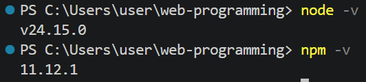
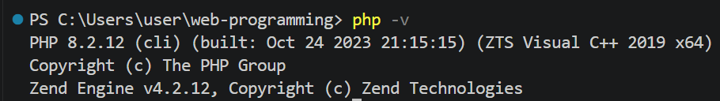
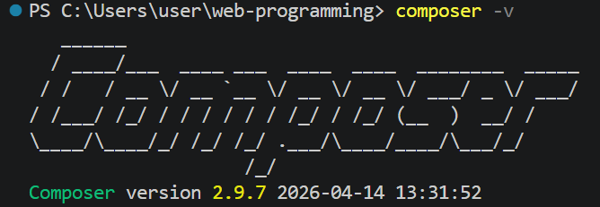
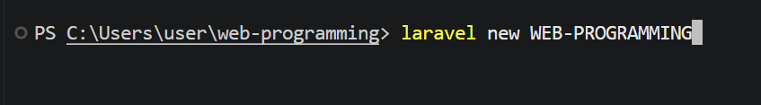
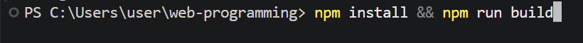
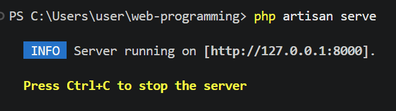
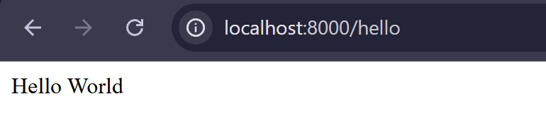

Laporan Praktikum Pemrograman Web
Pendahuluan
Praktikum ini merupakan langkah awal dalam mempelajari Framework Laravel. Fokus utamanya adalah menyiapkan lingkungan pengembangan (development environment) yang stabil menggunakan alat bantu seperti XAMPP sebagai server lokal dan Composer sebagai manajer dependensi PHP. Laravel merupakah satu framework PHP yang pupuler yang dikembangkan oleh taylor otwell, Laravel merupakan proyek open source untuk mengembangkan aplikasi berbasis web dengan arsitektur MVC (Model – View – Controller).
Fokus utama dari modul praktikum ini mencakup penyiapan lingkungan pengembangan lokal menggunakan XAMPP sebagai web server, serta penggunaan Composer sebagai dependency manager untuk mengelola pustaka PHP yang dibutuhkan. Selain aspek backend, praktikum ini juga menyentuh integrasi alat bantu frontend modern seperti Vite untuk optimasi aset aplikasi
Langkah 1: Instalasi Tools dan Konfigurasi
Paastikan alat-alat yang dibutuhkan sudah terinstall di komputer kita. Mulai dari PHP, XAMPP/Laragon, Composer, Git, Node JS, dan NPM.



Langkah 2: Membuat Proyek
Setelah Composer siap, langkah berikutnya adalah mengunduh installer Laravel secara global dengan perintah composer global require laravel/installer. Kemudian, kita dapat membuat project baru dengan perintah

Setelah itu, dijalankan perintah untuk membangun aset frontend

Langkah 3: Verifikasi Berhasil
Aplikasi dijalankan dengan perintah php artisan serve dan diakses melalui alamat http://127.0.0.1:8000.

Langkah 4: Routing & Controller
Verifikasi dilakukan dengan mengakses URL http://127.0.0.1:8000/helo. Browser berhasil menampilkan teks "Hello World" sesuai dengan logika yang kita definisikan.
Kemudain kita akan mencoba print hello world. Disini saya melakukannya dengan membuat route baru mengarah ke /hello.


Membuat Model:
php artisan make:model SiswaMembuat Controller:
php artisan make:controller SiswaController